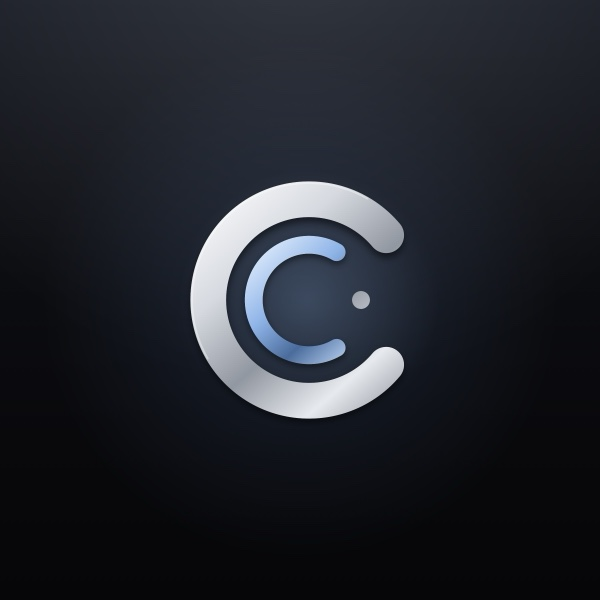

Corres · Support
How can we help?
Write to support@corres.app and a person reads it, usually within a day. The answers to the common questions are below.
Getting Corres
How do I join the beta?
Install Apple’s TestFlight app, then open the Corres beta link on your iPhone, iPad or Mac and tap Install. Corres isn’t on the App Store yet. While in beta, Corres Pro is included free.
Can I try it before adding an account?
Yes. On the first screen, tap Explore Corres to see every screen with sample mail. Add a real account whenever you’re ready.
Accounts
Which email accounts work with Corres?
Gmail and Google Workspace, Outlook.com, Hotmail, Live and Microsoft 365, iCloud Mail, and almost any other email that offers IMAP: Yahoo, AOL, Fastmail, Zoho, GMX, Yahoo! JAPAN, Naver, QQ, 163 and more. Add one in Settings → Add Account. For other email, enter your address; Corres finds the server settings for well-known services and shows how to make an app password where one is needed.
How do I add iCloud Mail?
Apple asks other mail apps for an app-specific password instead of your Apple Account password. In Corres, choose Settings → Add Account → iCloud Mail and enter your iCloud address, then tap Open Apple Account. Sign in, choose Sign-In and Security, then App-Specific Passwords, make one called Corres and copy it. Back in Corres, tap Paste. If you later change your Apple Account password, Apple turns app-specific passwords off; Corres asks for a new one.
Google says the app isn't verified, or won't let me sign in
While Corres is in beta, Google limits Gmail sign-in to listed testers until its verification is finished. Email us the Gmail address you'd like to use and we'll add it.
My work Outlook account needs an administrator's approval
Some companies only allow apps their IT team has approved. Ask your administrator to approve Corres for your organization, or use a personal Outlook account in the meantime.
How do I remove an account?
Settings → tap the account → Remove Account (on the Mac, Corres → Settings → Accounts). It’s removed from Corres on all your devices, its mail is deleted from them, and its push notifications are turned off. To revoke access entirely, also remove Corres in your Google or Microsoft account's security settings, or turn off its app-specific password at account.apple.com.
How do I use Corres on my Mac?
Install TestFlight on your Mac and open the same beta link. Your accounts arrive from your iPhone through iCloud Keychain, so there’s nothing to sign in to again, and one Corres Pro covers iPhone, iPad and Mac. The Mac knows Mail’s shortcuts (⌘R reply, ⌃⌘A archive) and Gmail’s single keys (E archive, R reply, J and K to move).
Mail and notifications
I'm not getting notifications
Check Settings → Notifications in Corres (each account has its own setting) and Corres in your iPhone's Settings → Notifications. Outlook mail notifies within seconds. Gmail notifies when iOS lets Corres check in, which is usually within minutes. iCloud tells only Apple Mail the moment mail arrives. For instant iCloud alerts, or for another email account, turn on Instant Notifications in Settings → the account: Corres's mail watcher then keeps an eye on your Inbox for you, without ever reading your email. Without it, Corres checks whenever iOS lets it, usually within the hour, and instantly while it's open.
Why is an email in Needs You, or not?
Every email in Needs You says why it's there. Move one to fix it: Corres learns from it, and Settings → Sorting → What Corres Has Learned shows each lesson and lets you undo it.
How do I choose what happens with new senders?
In Settings → Senders → First Emails, pick Review Everyone, Review Companies (a person’s first email comes straight in, a company’s waits for your OK), Show Marked New, or Let Everyone In. Blocking only hides a sender in Corres; it never changes your email account.
What is the Daily Brief?
An optional card at the top of Needs You with what’s due today, today’s events, deliveries arriving and the reply you’ve owed longest. It’s off until you turn it on in Settings → Sorting → Daily Brief.
Can I take back an email I just sent?
Yes. After you send, Corres waits a few seconds before the email goes, with Undo on screen. On the Mac, Edit → Undo works too. You can change how long it waits in Settings.
Corres Pro
What's free and what's in Pro?
Mail is free: read, write, search and organize every account. Pro adds Needs You, Waiting, answers in Search, summaries and suggested replies. Pro starts with a free trial and is sold monthly or yearly through the App Store. In the TestFlight beta, Pro is included free.
How do I cancel or change my subscription?
On your iPhone, open Settings → your name → Subscriptions → Corres. Cancel at least 24 hours before the period ends to avoid renewing. Apple handles billing and refunds: reportaproblem.apple.com.
I bought Pro but it isn't unlocked
Open Settings in Corres and tap Restore Purchases, signed in with the same Apple Account you bought it with.
Privacy
Does Corres read my email on a server?
No. Mail goes straight from Google, Microsoft or Apple to your iPhone, iPad or Mac and stays there. Sorting, summaries and answers in Search run on your device. The full details are in the privacy policy.
How do I delete my data?
Remove your accounts in Settings and delete the app. Removing an account also deletes its notification records from our servers. Your mail itself was never kept anywhere else. Questions about privacy: privacy@corres.app.